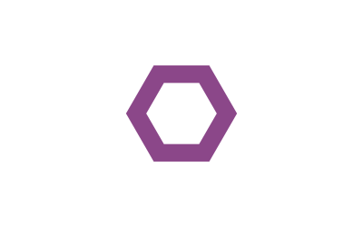
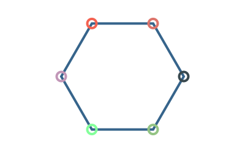
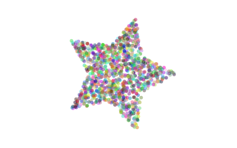
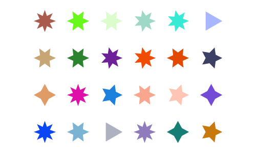

The basics
The underlying drawing model is that points are added to paths, then the paths can be filled and/or stroked, using the current graphics state, which specifies colors, line thicknesses and patterns, and opacity. You can modify the drawing space by transforming/rotating/scaling it before you add graphics.
Many of the drawing functions have an action argument. This can be :nothing, :fill, :stroke, :fillstroke, :fillpreserve, :strokepreserve, :clip. The default is :nothing.
Positions are usually specified either by x and y coordinates or a Point(x, y). Angles are usually measured starting at the positive x-axis going towards the positive y-axis (which usually points 'down' the page or canvas) in radians. Or 'clockwise'.
Types
The two main defined types are the Point and the Drawing. The Point type holds two coordinates, the x and y:
Point(12.0, 13.0)It's immutable, so you want to avoid trying to change the x or y coordinate directly.
The other is Drawing, which is how you create new drawings.
Drawings and files
To create a drawing, and optionally specify the filename and type, and dimensions, use the Drawing function to create a Drawing.
Luxor.Drawing — Type.Create a new drawing, and optionally specify file type (PNG, PDF, SVG, etc) and dimensions.
Drawing()creates a drawing, defaulting to PNG format, default filename "luxor-drawing.png", default size 800 pixels square.
You can specify dimensions, and use the default target filename:
Drawing(300,300)creates a drawing 300 by 300 pixels, defaulting to PNG format, default filename "/tmp/luxor-drawing.png".
Drawing(300,300, "my-drawing.pdf")creates a PDF drawing in the file "my-drawing.pdf", 300 by 300 pixels.
Drawing(800,800, "my-drawing.svg")`creates an SVG drawing in the file "my-drawing.svg", 800 by 800 pixels.
Drawing(800,800, "my-drawing.eps")creates an EPS drawing in the file "my-drawing.eps", 800 by 800 pixels.
Drawing("A4", "my-drawing.pdf")creates a drawing in ISO A4 size in the file "my-drawing.pdf". Other sizes available are: "A0", "A1", "A2", "A3", "A4", "A5", "A6", "Letter", "Legal", "A", "B", "C", "D", "E". Append "landscape" to get the landscape version.
Drawing("A4landscape")Create the drawing A4 landscape size.
Note that PDF files seem to default to a white background, but PNG defaults to black. Might be a bug here somewhere...
To finish a drawing and close the file, use finish(), and, to launch an external application to view it, use preview().
Luxor.finish — Function.finish()Finish the drawing, and close the file. You may be able to open it in an external viewer application with preview().
Luxor.preview — Function.preview()On macOS, open the file, which probably uses the default, Preview.app. On Unix, open the file with xdg-open. On Windows, pass the filename to the shell.
The global variable currentdrawing of type Drawing holds a few parameters which are occasionaly useful:
julia> fieldnames(currentdrawing)
10-element Array{Symbol,1}:
:width
:height
:filename
:surface
:cr
:surfacetype
:redvalue
:greenvalue
:bluevalue
:alphaThe drawing area (or any other area) can be divided into tiles (rows and columns) using the Tiler iterator.
fontsize(20)
tiles = Tiler(400, 300, 4, 5, margin=5)
for (pos, n) in tiles
randomhue()
box(pos, tiles.tilewidth, tiles.tileheight, :fillstroke)
sethue("white")
textcentred(string(n), pos + Point(0, 5))
end
Luxor.Tiler — Type.A Tiler is an iterator that returns the x/y point of the center of each tile in a set of tiles that divide up a rectangular space such as a page into rows and columns.
tiles = Tiler(areawidth, areaheight, nrows, ncols, margin=20)where width, height is the dimensions of the area to be tiled, nrows/ncols is the number of rows and columns required, and margin is applied to all four edges of the area before the function calculates the tile sizes required.
tiles = Tiler(1000, 800, 4, 5, margin=20)
for (pos, n) in tiles
# the point pos is the center of the tile
endYou can access the calculated tile width and height like this:
tiles = Tiler(1000, 800, 4, 5, margin=20)
for (pos, n) in tiles
ellipse(pos.x, pos.y, tiles.tilewidth, tiles.tileheight, :fill)
endAxes and backgrounds
The origin (0/0) starts off at the top left: the x axis runs left to right, and the y axis runs top to bottom.
The origin() function moves the 0/0 point to the center of the drawing. It's often convenient to do this at the beginning of a program.
The axes() function draws a couple of lines and text labels in light gray to indicate the position and orientation of the current axes.
background() fills the entire image with a color, covering any previous contents.
background("gray20")
origin()
axes()
Luxor.background — Function.background(color)Fill the canvas (or the current clipping region, if there is one) with a single color.
Examples:
background("antiquewhite")
background("ivory")
background(Colors.RGB(0, 0, 0))
background(Colors.Luv(20, -20, 30))Luxor.axes — Function.Draw two axes lines starting at the current 0/0 and continuing out along the current positive x and y axes.
Luxor.origin — Function.origin()Set the 0/0 origin to the center of the drawing (otherwise it will stay at the top left corner, the default).
Simple shapes
Functions for making shapes include circle(), ellipse(), squircle(), arc(), carc(), curve(), sector(), rect(), pie(), and box().
Rectangles and boxes
Luxor.rect — Function.Create a rectangle with one corner at (xmin/ymin) with width w and height h and do an action.
rect(xmin, ymin, w, h, action)See box() for more ways to do similar things, such as supplying two opposite corners, placing by centerpoint and dimensions.
Create a rectangle with one corner at cornerpoint with width w and height h and do an action.
rect(cornerpoint, w, h, action)Luxor.box — Function.Create a rectangle between two points and do an action.
box(cornerpoint1, cornerpoint2, action=:nothing)Create a box/rectangle using the first two points of an array of Points to defined opposite corners.
box(points::Array, action=:nothing)Create a box/rectangle centered at point pt with width and height.
box(pt::Point, width, height, action=:nothing)Create a box/rectangle centered at point x/y with width and height.
box(x, y, width, height, action=:nothing)Circles, ellipses, and the like
There are various ways to make circles, including by center and radius, through two points, or passing through three points. You can place ellipses (and circles) by defining centerpoint and width and height.
sethue("black")
p1 = Point(0, -50)
p2 = Point(100, 0)
p3 = Point(0, 65)
map(p -> circle(p, 4, :fill), [p1, p2, p3])
circle(center3pts(p1, p2, p3)..., :stroke)
Luxor.circle — Function.Make a circle of radius r centred at x/y.
circle(x, y, r, action=:nothing)action is one of the actions applied by do_action, defaulting to :nothing. You can also use ellipse() to draw circles and place them by their centerpoint.
Make a circle centred at pt.
circle(pt, r, action)Make a circle that passes through two points that define the diameter:
circle(pt1::Point, pt2::Point, action=:nothing)Luxor.ellipse — Function.Make an ellipse, centered at xc/yc, fitting in a box of width w and height h.
ellipse(xc, yc, w, h, action=:none)Make an ellipse, centered at point c, with width w, and height h.
ellipse(cpt, w, h, action=:none)A sector (strictly an "annular sector") has an inner and outer radius, as well as start and end angles.
sector(50, 90, pi/2, 0, :fill)Luxor.sector — Function.sector(innerradius, outerradius, startangle, endangle, action=:none)Make an annular sector centered at the current 0/0 point.

A pie (or wedge) has start and end angles.
pie(0, 0, 100, pi/2, pi, :fill)
Luxor.pie — Function.pie(x, y, radius, startangle, endangle, action=:none)Make a pie shape centered at x/y. Angles start at the positive x-axis and are measured clockwise.
pie(centerpoint, radius, startangle, endangle, action=:none)Make a pie shape centered at centerpoint.
Angles start at the positive x-axis and are measured clockwise.
A squircle is a cross between a square and a circle. You can adjust the squariness and circularity of it to taste:
setline(2)
tiles = Tiler(600, 300, 1, 3)
for (pos, n) in tiles
sethue("lavender")
squircle(pos, 80, 80, rt=[0.3, 0.5, 0.7][n], :fillpreserve)
sethue("grey20")
stroke()
textcentered("rt = $([0.3, 0.5, 0.7][n])", pos)
end
Luxor.squircle — Function.Make a squircle (basically a rectangle with rounded corners). Specify the center position, horizontal radius (distance from center to a side), and vertical radius (distance from center to top or bottom):
squircle(center::Point, hradius, vradius, action=:none; rt = 0.5, vertices=false)The rt option defaults to 0.5, and gives an intermediate shape. Values less than 0.5 make the shape more square. Values above make the shape more round.
Lines, arcs, and curves
There is a 'current position' which you can set with move(), and can use implicitly in functions like line() and text().
Luxor.move — Function.Move to a point.
move(x, y)
move(pt)Luxor.rmove — Function.Move by an amount from the current point. Move relative to current position by x and y:
rmove(x, y)Move relative to current position by the pt's x and y:
rmove(pt)Luxor.line — Function.Create a line from the current position to the x/y position and optionally apply an action:
line(x, y)
line(x, y, :action)
line(pt)Make a line between two points, pt1 and pt2.
line(pt1::Point, pt2::Point, action=:nothing)Luxor.rline — Function.Create a line relative to the current position to the x/y position and optionally apply an action:
rline(x, y)
rline(x, y, :action)
rline(pt)Luxor.arc — Function.Add an arc to the current path from angle1 to angle2 going clockwise.
arc(xc, yc, radius, angle1, angle2, action=:nothing)Angles are defined relative to the x-axis, positive clockwise.
TODO: Point versions
Luxor.carc — Function.Add an arc to the current path from angle1 to angle2 going counterclockwise.
carc(xc, yc, radius, angle1, angle2, action=:nothing)Angles are defined relative to the x-axis, positive clockwise.
TODO: Point versions
Luxor.curve — Function.Create a cubic Bézier spline curve.
curve(x1, y1, x2, y2, x3, y3)
curve(p1, p2, p3)The spline starts at the current position, finishing at x3/y3 (p3), following two control points x1/y1 (p1) and x2/y2 (p2)
Arrows
You can draw lines or arcs with arrows at the end with arrow(). For straight arrows, supply the start and end points. For arrows as circular arcs, you provide center, radius, start and finish angles. You can optionally provide dimensions for the arrowheadlength and angle of the tip of the arrow.
setline(2)
arrow(Point(0, 0), Point(0, -65))
arrow(Point(0, 0), Point(100, -65), arrowheadlength=20, arrowheadangle=pi/4)
arrow(Point(0, 0), 100, pi, pi/2, arrowheadlength=25, arrowheadangle=pi/12)
Luxor.arrow — Function.Place a line between two points and add an arrowhead at the end. The arrowhead length is the length of the side of the arrow's head, and arrow head angle is the angle between the side of the head and the shaft of the arrow.
arrow(startpoint::Point, endpoint::Point; arrowheadlength=10, arrowheadangle=pi/8)It doesn't need stroking/filling, the shaft is stroke()d and the head fill()ed. Quiet at the back of the class.
Place a curved arrow, an arc centered at centerpos starting at startangle and ending at endangle with an arrowhead at the end. Angles are measured clockwise from the positive x-axis.
arrow(centerpos::Point, radius, startangle, endangle; arrowheadlength=10, arrowheadangle=pi/8)Paths
A path is a group of points. A path can have subpaths (which can form holes).
The getpath() function gets the current Cairo path as an array of element types and points. getpathflat() gets the current path as an array of type/points with curves flattened to line segments.
Luxor.newpath — Function.newpath()Create a new path. This is Cairo's new_path() function.
Luxor.newsubpath — Function.newsubpath()Add a new subpath to the current path. This is Cairo's new_sub_path() function. It can be used for example to make holes in shapes.
Luxor.closepath — Function.closepath()Close the current path. This is Cairo's close_path() function.
Luxor.getpath — Function.Get the current path (thanks Andreas Lobinger!)
Returns a CairoPath which is an array of .element_type and .points. With the results you could typically step through and examine each entry:
o = getpath()
for e in o
if e.element_type == Cairo.CAIRO_PATH_MOVE_TO
(x, y) = e.points
move(x, y)
elseif e.element_type == Cairo.CAIRO_PATH_LINE_TO
(x, y) = e.points
# straight lines
line(x, y)
stroke()
circle(x, y, 1, :stroke)
elseif e.element_type == Cairo.CAIRO_PATH_CURVE_TO
(x1, y1, x2, y2, x3, y3) = e.points
# Bezier control lines
circle(x1, y1, 1, :stroke)
circle(x2, y2, 1, :stroke)
circle(x3, y3, 1, :stroke)
move(x, y)
curve(x1, y1, x2, y2, x3, y3)
stroke()
(x, y) = (x3, y3) # update current point
elseif e.element_type == Cairo.CAIRO_PATH_CLOSE_PATH
closepath()
else
error("unknown CairoPathEntry " * repr(e.element_type))
error("unknown CairoPathEntry " * repr(e.points))
end
endLuxor.getpathflat — Function.Get the current path, like getpath() but flattened so that there are no Bezier curves.
Returns a CairoPath which is an array of .element_type and .points.
Color and opacity
For color definitions and conversions, use Colors.jl.
The difference between the setcolor() and sethue() functions is that sethue() is independent of alpha opacity, so you can change the hue without changing the current opacity value.
Luxor.sethue — Function.Set the color. sethue() is like setcolor(), but (like Mathematica) we sometimes want to change the current 'color' without changing alpha/opacity. Using sethue() rather than setcolor() doesn't change the current alpha opacity.
sethue("black")
sethue(0.3,0.7,0.9)sethue("red")sethue(0.3, 0.7, 0.9)Use setcolor(r,g,b,a) to set transparent colors.
Luxor.setcolor — Function.setcolor(col::String)Set the current color to a named color. This relies on Colors.jl to convert a string to RGBA eg setcolor("gold") # or "green", "darkturquoise", "lavender" or what have you. The list is at Colors.color_names.
setcolor("gold")
setcolor("darkturquoise")Use sethue() for changing colors without changing current opacity level.
Set the current color.
setcolor(r, g, b)
setcolor(r, g, b, alpha)
setcolor(color)
setcolor(col::ColorTypes.Colorant)Examples:
setcolor(convert(Colors.HSV, Colors.RGB(0.5, 1, 1)))
setcolor(.2, .3, .4, .5)
setcolor(convert(Color.HSV, Color.RGB(0.5, 1, 1)))
for i in 1:15:360
setcolor(convert(Color.RGB, Color.HSV(i, 1, 1)))
...
endLuxor.randomhue — Function.Set a random hue.
randomhue()Choose a random color without changing the current alpha opacity.
Luxor.randomcolor — Function.Set a random color.
randomcolor()This probably changes the current alpha opacity too.
Styles
The set- functions control the width, end shapes, join behavior and dash pattern:
for l in 1:3
sethue("black")
setline(20)
setlinecap(["butt", "square", "round"][l])
textcentred(["butt", "square", "round"][l], 80l, 80)
setlinejoin(["round", "miter", "bevel"][l])
textcentred(["round", "miter", "bevel"][l], 80l, 120)
poly(ngon(Point(80l, 0), 20, 3, 0, vertices=true), :strokepreserve, close=false)
sethue("white")
setline(1)
stroke()
end
setline(12)
patterns = "solid", "dotted", "dot", "dotdashed", "longdashed", "shortdashed", "dash", "dashed", "dotdotdashed", "dotdotdotdashed"
tiles = Tiler(400, 250, 10, 1, margin=10)
for (pos, n) in tiles
setdash(patterns[n])
textright(patterns[n], pos.x - 20, pos.y + 4)
line(pos, Point(pos.x + 250, pos.y), :stroke)
end
Luxor.setline — Function.Set the line width.
setline(n)Luxor.setlinecap — Function.Set the line ends. s can be "butt" (the default), "square", or "round".
setlinecap(s)
setlinecap("round")Luxor.setlinejoin — Function.Set the line join, or how to render the junction of two lines when stroking.
setlinejoin("round")
setlinejoin("miter")
setlinejoin("bevel")Luxor.setdash — Function.Set the dash pattern to one of: "solid", "dotted", "dot", "dotdashed", "longdashed", "shortdashed", "dash", "dashed", "dotdotdashed", "dotdotdotdashed"
setlinedash("dot")Luxor.fillstroke — Function.Fill and stroke the current path.
Luxor.stroke — Function.Stroke the current path with the current line width, line join, line cap, and dash settings. The current path is then cleared.
stroke()Base.fill — Function.Fill the current path with current settings. The current path is then cleared.
fill()Luxor.strokepreserve — Function.Stroke the current path with current line width, line join, line cap, and dash settings, but then keep the path current.
strokepreserve()Luxor.fillpreserve — Function.Fill the current path with current settings, but then keep the path current.
fillpreserve()gsave() saves a copy of the current graphics settings (current axis rotation, position, scale, line and text settings, and so on). When the next grestore() is called, all changes you've made to the graphics settings will be discarded, and they'll return to how they were when you used gsave(). gsave() and grestore() should always be balanced in pairs.
Luxor.gsave — Function.Save the current graphics state on the stack.
Luxor.grestore — Function.Replace the current graphics state with the one on top of the stack.
Polygons and shapes
Shapes
Regular polygons ("ngons")
You can make regular polygons — from triangles, pentagons, hexagons, septagons, heptagons, octagons, nonagons, decagons, and on-and-on-agons — with ngon().

using Luxor, Colors
Drawing(1200, 1400)
origin()
cols = diverging_palette(60, 120, 20) # hue 60 to hue 120
background(cols[1])
setopacity(0.7)
setline(2)
ngon(0, 0, 500, 8, 0, :clip)
for y in -500:50:500
for x in -500:50:500
setcolor(cols[rand(1:20)])
ngon(x, y, rand(20:25), rand(3:12), 0, :fill)
setcolor(cols[rand(1:20)])
ngon(x, y, rand(10:20), rand(3:12), 0, :stroke)
end
end
finish()
preview()Luxor.ngon — Function.Find the vertices of a regular n-sided polygon centred at x, y:
ngon(x, y, radius, sides=5, orientation=0, action=:nothing; vertices=false, reversepath=false)ngon() draws the shapes: if you just want the raw points, use keyword argument vertices=false, which returns the array of points instead. Compare:
ngon(0, 0, 4, 4, 0, vertices=false) # returns the polygon's points:
4-element Array{Luxor.Point,1}:
Luxor.Point(2.4492935982947064e-16,4.0)
Luxor.Point(-4.0,4.898587196589413e-16)
Luxor.Point(-7.347880794884119e-16,-4.0)
Luxor.Point(4.0,-9.797174393178826e-16)
whereas
ngon(0, 0, 4, 4, 0, :close) # draws a polygonDraw a regular polygon centred at point p:
ngon(centerpos, radius, sides=5, orientation=0, action=:nothing; vertices=false, reversepath=false)Polygons
A polygon is an array of Points. Use poly() to add them, or randompointarray() to create a random list of Points.
Polygons can contain holes. The reversepath keyword changes the direction of the polygon. The following piece of code uses ngon() to make two polygons, the second forming a hole in the first, to make a hexagonal bolt shape:
ngon(0, 0, 60, 6, 0, :path)
newsubpath()
ngon(0, 0, 40, 6, 0, :path, reversepath=true)
fillstroke()
The prettypoly() function can place graphics at each vertex of a polygon. After the polygon action, the vertex_action is evaluated at each vertex. For example, to mark each vertex of a polygon with a randomly-colored circle:
using Luxor, Colors
setline(4)
poly1 = ngon(0, 0, 100, 6, 0, vertices=true)
prettypoly(poly1, :stroke, :(
randomhue();
scale(0.5, 0.5);
circle(0, 0, 15, :stroke)
),
close=true)
Luxor.prettypoly — Function.Draw the polygon defined by points in pl, possibly closing and reversing it, using the current parameters, and then evaluate (using eval, shudder) the expression at every vertex of the polygon. For example, you can mark each vertex of a polygon with a circle scaled to 0.1.
prettypoly(pointlist::Array,
action = :nothing,
vertex_action::Expr = :(circle(0, 0, 1, :fill));
close=false,
reversepath=false)Example:
prettypoly(pl, :fill, :(scale(0.1, 0.1);
circle(0, 0, 10, :fill)
),
close=false)The expression can't use definitions that are not in scope, eg you can't pass a variable in from the calling function and expect this function to know about it. Yes, not tidy...
Polygons can be simplified using the Douglas-Peucker algorithm (non-recursive version), via simplify().
sincurve = (Point(6x, 80sin(x)) for x in -5pi:pi/20:5pi)
prettypoly(collect(sincurve), :stroke, :(sethue("red"); circle(0, 0, 3, :fill)))
text(string("number of points: ", length(collect(sincurve))), 0, 100)
translate(0, 200)
simplercurve = simplify(collect(sincurve), 0.5)
prettypoly(simplercurve, :stroke, :(sethue("red"); circle(0, 0, 3, :fill)))
text(string("number of points: ", length(simplercurve)), 0, 100)
Luxor.simplify — Function.Simplify a polygon:
simplify(pointlist::Array, detail=0.1)detail is probably the smallest permitted distance between two points in pixels.
The isinside() function returns true if a point is inside a polygon.
setopacity(0.5)
apolygon = star(Point(0,0), 100, 5, 0.5, 0, vertices=true)
for n in 1:10000
apoint = randompoint(Point(-200, -150), Point(200, 150))
randomhue()
isinside(apoint, apolygon) && circle(apoint, 3, :fill)
end
Luxor.isinside — Function.Is a point p inside a polygon pol?
isinside(p, pol)Returns true or false.
This is an implementation of the Hormann-Agathos (2001) Point in Polygon algorithm
There are some experimental polygon functions. These don't work well for polygons that aren't simple or where the sides intersect each other, but they sometimes do the job. For example, here's polysplit():
origin()
setopacity(0.8)
sethue("black")
s = squircle(Point(0,0), 60, 60, vertices=true)
pt1 = Point(0, -120)
pt2 = Point(0, 120)
line(pt1, pt2, :stroke)
poly1, poly2 = polysplit(s, pt1, pt2)
randomhue()
poly(poly1, :fill)
randomhue()
poly(poly2, :fill)Luxor.polysplit — Function.Split a polygon into two where it intersects with a line:
polysplit(p, p1, p2)This doesn't always work, of course. (Tell me you're not surprised.) For example, a polygon the shape of the letter "E" might end up being divided into more than two parts.
Luxor.polysortbydistance — Function.Sort a polygon by finding the nearest point to the starting point, then the nearest point to that, and so on.
polysortbydistance(p, starting::Point)You can end up with convex (self-intersecting) polygons, unfortunately.
Luxor.polysortbyangle — Function.Sort the points of a polygon into order. Points are sorted according to the angle they make with a specified point.
polysortbyangle(pointlist::Array, refpoint=minimum(pointlist))The refpoint can be chosen, but the minimum point is usually OK too:
polysortbyangle(parray, polycentroid(parray))Luxor.polycentroid — Function.Find the centroid of simple polygon.
polycentroid(pointlist)Returns a point. This only works for simple (non-intersecting) polygons.
You could test the point using isinside().
Luxor.polybbox — Function.Find the bounding box of a polygon (array of points).
polybbox(pointlist::Array)Return the two opposite corners (suitable for box(), for example).
Stars
Use star() to make a star.
tiles = Tiler(400, 300, 4, 6, margin=5)
for (pos, n) in tiles
randomhue()
star(pos, tiles.tilewidth/3, rand(3:8), 0.5, 0, :fill)
end
Luxor.star — Function.Make a star:
star(xcenter, ycenter, radius, npoints=5, ratio=0.5, orientation=0, action=:nothing; vertices = false, reversepath=false)Use vertices=true to return the vertices of a star instead of drawing it.
Draw a star centered at a position:
star(center, radius, npoints=5, ratio=0.5, orientation=0, action=:nothing; vertices = false, reversepath=false)Text and fonts
Placing text
Use text(), textcentred(), and textright() to place text. textpath() converts the text into a graphic path suitable for further manipulations.
Luxor.text — Function.text(str)
text(str, x, y)
text(str, pt)Draw the text in the string str at x/y or pt, placing the start of the string at the point. If you omit the point, it's placed at 0/0.
In Luxor, placing text doesn't affect the current point.
Luxor.textcentred — Function.textcentred(str)
textcentred(str, x, y)
textcentred(str, pt)Draw text in the string str centered at x/y or pt. If you omit the point, it's placed at 0/0.
Text doesn't affect the current point!
Luxor.textright — Function.textright(str)
textright(str, x, y)
textright(str, pt)Draw text in the string str right-aligned at x/y or pt. If you omit the point, it's placed at 0/0.
Text doesn't affect the current point!
Luxor.textpath — Function.textpath(t)Convert the text in string t to a new path, for subsequent filling/stroking etc...
Fonts
Use fontface(fontname) to choose a font, and fontsize(n) to set font size in points.
The textextents(str) function gets an array of dimensions of the string str, given the current font.
Luxor.fontface — Function.fontface(fontname)Select a font to use. If the font is unavailable, it defaults to Helvetica/San Francisco (on macOS).
Luxor.fontsize — Function.fontsize(n)Set the font size to n points. Default is 10pt.
Luxor.textextents — Function.textextents(str)Return the measurements of the string str when set using the current font settings:
x_bearing
y_bearing
width
height
x_advance
y_advance
The bearing is the displacement from the reference point to the upper-left corner of the bounding box. It is often zero or a small positive value for x displacement, but can be negative x for characters like j; it's almost always a negative value for y displacement.
The width and height then describe the size of the bounding box. The advance takes you to the suggested reference point for the next letter. Note that bounding boxes for subsequent blocks of text can overlap if the bearing is negative, or the advance is smaller than the width would suggest.
Example:
textextents("R")returns
[1.18652; -9.68335; 8.04199; 9.68335; 9.74927; 0.0]Text on a curve
Use textcurve(str) to draw a string str on a circular arc or spiral.

using Luxor, Colors
Drawing(1800, 1800, "/tmp/text-spiral.png")
fontsize(18)
fontface("LucidaSansUnicode")
origin()
background("ivory")
sethue("royalblue4")
textstring = join(names(Base), " ")
textcurve("this spiral contains every word in julia names(Base): " * textstring, -pi/2,
800, 0, 0,
spiral_in_out_shift = -18.0,
letter_spacing = 0,
spiral_ring_step = 0)
fontsize(35)
fontface("Agenda-Black")
textcentred("julia names(Base)", 0, 0)
finish()
preview()Luxor.textcurve — Function.Place a string of text on a curve. It can spiral in or out.
textcurve(the_text,
start_angle,
start_radius,
x_pos = 0,
y_pos = 0;
# optional keyword arguments:
spiral_ring_step = 0, # step out or in by this amount
letter_spacing = 0, # tracking/space between chars, tighter is (-), looser is (+)
spiral_in_out_shift = 0 # + values go outwards, - values spiral inwards
)start_angle is relative to +ve x-axis, arc/circle is centred on (x_pos,y_pos) with radius start_radius.
Text clipping
You can use newly-created text paths as a clipping region - here the text paths are 'filled' with names of randomly chosen Julia functions:

using Luxor, Colors
currentwidth = 1250 # pts
currentheight = 800 # pts
Drawing(currentwidth, currentheight, "/tmp/text-path-clipping.png")
origin()
background("darkslategray3")
fontsize(600) # big fontsize to use for clipping
fontface("Agenda-Black")
str = "julia" # string to be clipped
w, h = textextents(str)[3:4] # get width and height
translate(-(currentwidth/2) + 50, -(currentheight/2) + h)
textpath(str) # make text into a path
setline(3)
setcolor("black")
fillpreserve() # fill but keep
clip() # and use for clipping region
fontface("Monaco")
fontsize(10)
namelist = map(x->string(x), names(Base)) # get list of function names in Base.
x = -20
y = -h
while y < currentheight
sethue(rand(7:10)/10, rand(7:10)/10, rand(7:10)/10)
s = namelist[rand(1:end)]
text(s, x, y)
se = textextents(s)
x += se[5] # move to the right
if x > w
x = -20 # next row
y += 10
end
end
finish()
preview()